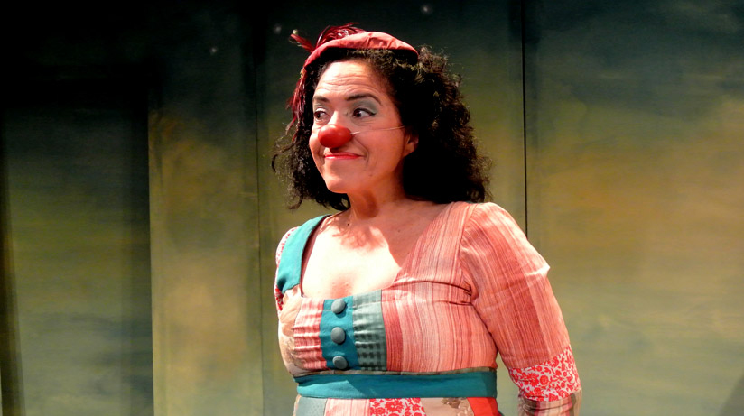
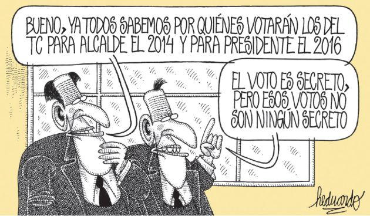

Temas del Día:
Los sueños y alegrías de Wendy Ramos en su unipersonal "Cuerda"
Atada a una soga y con un armario en el escenario, Wendy Ramos hará un paseo por sus recuerdos, alegrías y cambios en su primer unipersonal llamado 'Cuerda'.
Por: Ximena Arrieta / Fotografía: Jesús Hormaza
¿De qué trata Cuerda?
Es la historia de una payasa que está atada a una cuerda y que empieza hablando de lo mucho que sabe de sí misma. De pronto, se da cuenta de que hay una parte que no entiende y que hay algo que le hace falta. Es ahí donde empieza la búsqueda sobre ese vacío que siente.
¿Cómo ha sido el proceso de creación del personaje?
Vengo trabajando hace años un tipo de clown distinto, enfocado en uno mismo más que en un personaje. Durante todos estos años, he estado buscando esos lados de la payasa, pero los míos también, que se han ido complementando. Es como una nueva personalidad.
¿Es fácil sacar parte de tu mundo interior y dárselo a tu payasa?
Me ha tomado mucho tiempo, pero me interesa trabajar en un tipo de clown que te permita mostrar de todo. Ha sido una labor larguísima el poder lograr jugar con muchas partes mías frente al público.
¿Cómo te sientes con este primer unipersonal?
Me muero de los nervios. Es algo grande y además estoy sola en el escenario con mi cuerda y con mi vida, lo cual es muy fuerte. Pero estoy muy emocionada. Junto con Nishme Súmar (directora de la obra) le hemos metido mucho corazón. Hace un tiempo pensaba que cuando cumpliera 20 años de payasa iba a hacer algo personal, pero lo fui postergando. Luego empecé a hacer cosas en el teatro y eso me dio más seguridad en mí misma.
¿Qué fue lo que más te costó cuando pasaste del clown al teatro?
Son cosas muy diferentes. Yo vengo del clown y lo mío era mirar al público. Entonces, no mirar a la gente en el teatro me costó mucho. Lo otro es que el texto en el clown es tuyo, es muy personal; yo no digo nada en escena que no sea algo que siento o me haya impactado. En el teatro tienes la facilidad de poder salir del texto, jugar y volver nuevamente.
Desde que empezaste en el clown hace 23 años, ¿cómo crees que ha cambiado la visión del público hacia este arte?
Lo bueno del clown es que empezó con Pataclaun, lo que le dio un aire más profesional, con producciones de mucha calidad; desde ahí quedó como algo bueno. Con el paso de los años, el trabajo del clown ha ido creciendo por una nueva ruta, ahora el clown se usa en temas más sociales. Creo que ha habido un crecimiento en ese lado del payaso. No solo es algo gracioso.
Cuéntanos sobre A los 40, la película de Bruno Ascenzo en la que vas a participar…
El rodaje empieza en noviembre y se espera el estreno para el próximo año. Hace unos días, nos reunimos con Bruno para hacer la primera lectura y el texto está muy bueno, el elenco es una maravilla. Mi personaje es el de una mujer muy organizada y superentusiasta, que todo el tiempo está feliz. Es muy graciosa y estoy feliz de haber aceptado esa propuesta.
Tags: Unipersonal, Wendy Ramos, Actriz, Teatro, Cuerda, Obra
Noticias Relacionadas
NOTICIAS DE INTERÉS
[VIDEO] La Voz Perú el próximo proyecto de Ricardo Morán

Gisela pasaría a Frecuencia Latina
[GALERÍA] Beyonce brilló en Rock in Rio
[GALERÍA] Ensayos de Ricardo III

HEDUARDICIDIOS
ENCUESTA DEL DÍA
¿Le cree al presidente Humala cuando dice que no blindará al expresidente Alejandro Toledo?


LO MÁS LEIDO
-
1.
Alessandra Denegri canceló su boda con novio chileno
-
2.
Alan García respaldó proyecto de la unión civil homosexual
-
3.
Michael Urtecho bajo la lupa de Fiscalía por presunto enriquecimiento ilícito
-
4.
La Libertad: Detienen a 14 sicarios
-
5.
Miley Cyrus ya tendría nuevo galán
-
6.
Gisela Valcárcel estaría en coqueteos con Frecuencia Latina
-
7.
Cristian Benavente podría jugar la Champions con el Real Madrid
-
8.
Ezio Oliva visitó a Karen Schwarz
-
9.
¿En qué consiste la moda 'boyfriend'?
-
10.
Exigen la salida de Julio Arbizu